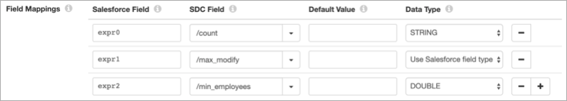

Salesforce Lookup
Supported pipeline types:
|
For example, you can configure the processor to use an account_number field as the field to look up account name values in a Salesforce object, and pass the values to a new account_name output field.
When a lookup results in multiple matches, the Salesforce Lookup processor can return the first matching value or return all matching values in separate records.
When you configure the Salesforce Lookup processor, you define connection information that the processor uses to connect to Salesforce, including the Salesforce API version.
You specify the lookup mode and related properties, the output fields for returned values, and the multiple match behavior. You can optionally define a default value to use for fields with missing values and set the behavior for fields with missing values and no default value. You can also configure the processor to locally cache the lookup values to improve performance.
When using the SOQL Query lookup mode, and either the SOAP API or the Bulk API version 39.0 or later, you can configure the processor to retrieve deleted records from the Salesforce recycle bin.
The processor generates Salesforce field attributes that provide additional information about each field.
You can optionally use an HTTP proxy to connect to Salesforce. When enabled in Salesforce, you can configure the processor to use mutual authentication to connect to Salesforce.
Lookup Mode
The Salesforce Lookup processor can use two modes to look up Salesforce data. Select one of the following modes:
- Retrieve
- In Retrieve mode, the Salesforce Lookup processor uses the specified Id field to perform the lookup, making a single retrieve() Salesforce API call for up to 2000 records at a time. If one or more of the IDs included in an API call is invalid, Salesforce rejects the entire set of records. Then, the Salesforce Lookup processor sends the records to error, using the configured error handling for the stage.
- SOQL Query
- In SOQL Query mode, the Salesforce Lookup processor makes an API call for each record. The processor uses a query() API call by default, and uses a queryAll() API call when including deleted records in the results.
Aggregate Functions in SOQL Queries
In SOQL Query mode, you can include SOQL
aggregate functions in the SELECT statements of SOQL queries. With one exception, the
processor places the result from the first function of a query into the
expr0 field, the result from the second function of the same query
into the expr1 field, and so on. The exception is the COUNT function
used without a field name - the processor always places that result into the
count field. The resulting field types depend on the functions and
queried fields. The stage does not generate field header attributes for the fields
resulting from aggregate functions. You can only include both aggregate functions and
non-aggregated fields in the same SELECT statement when you group by the non-aggregated
fields.
The following examples demonstrate some uses of aggregate functions in SOQL queries. Each
example examines data in the Account object where the name begins with the value in the
prefix field of the current record.
COUNT Function
Suppose you want the count of matching Salesforce records.
-
Without a field name, enter the following query:
SELECT COUNT() FROM Account WHERE Name LIKE '${record:value('/prefix')}%'When the COUNT function specifies no field name, the SELECT statement can contain no other elements.
In this case, the stage places the result from the function into the
countInteger field. -
With a field name, enter the following query:
SELECT COUNT(Id) FROM Account WHERE Name LIKE '${record:value('/prefix')}%'When the COUNT function includes a field name, the SELECT statement can include other aggregate functions.
In this case, the stage places the result from the function into the
expr0Integer field.
For more information about using the COUNT function with or without a field name, see the Salesforce developer documentation.
Multiple Aggregate Functions
You can use multiple aggregate functions in a single query.
Suppose that for the matching Salesforce records, you want the count, the most recent date that a record changed, and the smallest number of employees in any record.
SELECT COUNT(Id), MAX(LastModifiedDate), MIN(NumberOfEmployees) FROM Account
WHERE Name LIKE '${record:value('/prefix')}%'expr0- Integer field contains count of recordsexpr1- Datetime field contains last modified date-
expr2- Integer field contains number of employees
GROUP BY Clause
You can combine aggregate functions with a GROUP BY clause to compute values for groups of Salesforce records.
Suppose that for the matching Salesforce records, you want the unique values in the
Industry field along with count of records, last modified date,
and minimum number of employees in each industry.
SELECT Industry, COUNT(Id), MAX(LastModifiedDate), MIN(NumberOfEmployees) FROM Account
WHERE Name LIKE '${record:value('/prefix')}%'
GROUP BY Industry
Industry- String fieldexpr0- Integer field contains countexpr1- Datetime field contains last modified dateexpr2- Integer field contains number of employees
Field Aliases
You can use field aliases in the query to specify the field names where the stage places function results.
Suppose you want the count of records placed into the cnt field, the
most recent date that a record was changed placed into the
max_modify field, and the minimum number of employees placed
into the min_employees field.
SELECT COUNT(Id) cnt, MAX(LastModifiedDate) max_modify, MIN(NumberOfEmployees) min_employees FROM Account
WHERE Name LIKE '${record:value('/prefix')}%'
cnt- Integer fieldmax_modify- Datetime fieldmin_employees- Integer field
You cannot specify a SOQL keyword, such as count, as an alias.
In the Salesforce Lookup processor, you can use field mappings on the Lookup tab
rather than using field aliases. In the Salesforce Field property, enter the default
field, such as expr0. In the SDC Field property, enter the
preferred field name to place the function results. When using field mappings, you
can use SOQL keywords, such as count. You can also convert data
types.
For example, to place the results from the query into the count
String field, max_modify Datetime field, and
min_employees Double field, configure the Field Mappings
property on the Lookup tab as follows:

Lookup Cache
To improve pipeline performance, you can configure the Salesforce Lookup processor to locally cache the values returned from a Salesforce object.
The processor caches values until the cache reaches the maximum size or the expiration time. When the first limit is reached, the processor evicts values from the cache.
- Size-based eviction
- Configure the maximum number of values that the processor caches. When the maximum number is reached, the processor evicts the oldest values from the cache.
- Time-based eviction
- Configure the amount of time that a value can remain in the cache without being written to or accessed. When the expiration time is reached, the processor evicts the value from the cache. The eviction policy determines whether the processor measures the expiration time since the last write of the value or since the last access of the value.
When you stop the pipeline, the processor clears the cache.
Salesforce Attributes
The Salesforce Lookup processor generates Salesforce field attributes that provide additional information about each field. The origin receives these details from Salesforce.
Salesforce attributes include a user-defined prefix to differentiate the Salesforce attributes from other attributes. By default, the prefix is "salesforce.". You can change the prefix that the processor uses and you can configure the processor not to create Salesforce attributes.
You can use the record:fieldAttribute or
record:fieldAttributeOrDefault functions to access the information
in the attribute.
The Salesforce Lookup processor can provide the following Salesforce field attributes:
| Salesforce Field Attribute | Description |
|---|---|
| <Salesforce prefix>salesforceType | Provides the original Salesforce data type for the field. |
| <Salesforce prefix>length | Provides the original length for all string and textarea fields. |
| <Salesforce prefix>precision | Provides the original precision for all double fields. |
| <Salesforce prefix>scale | Provides the original scale for all double fields. |
| <Salesforce prefix>digits | Provides the maximum number of digits for all integer fields. |
For more information about field attributes, see Field Attributes.
Changing the API Version
Data Collector ships with version 43.0 of the Salesforce Web Services Connector libraries. You can use a different Salesforce API version if you need to access functionality not present in version 43.0.
Configuring a Salesforce Lookup
Configure a Salesforce Lookup processor to perform lookups in a Salesforce object.